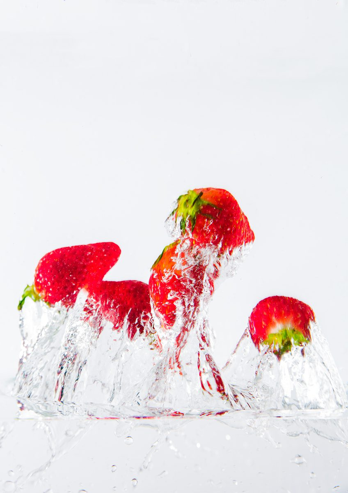
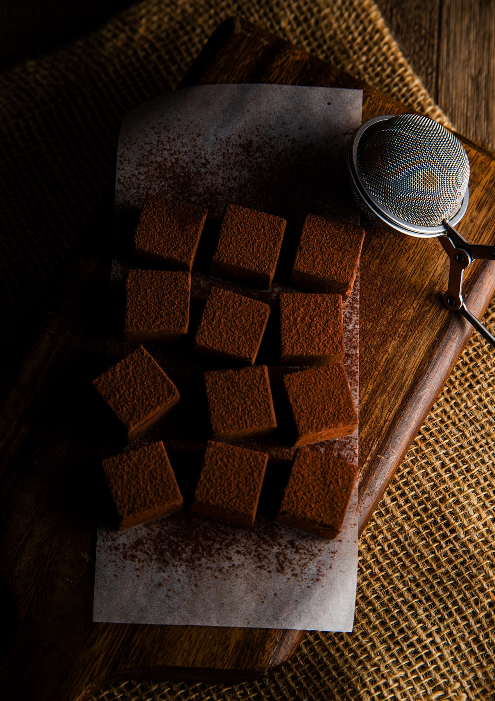
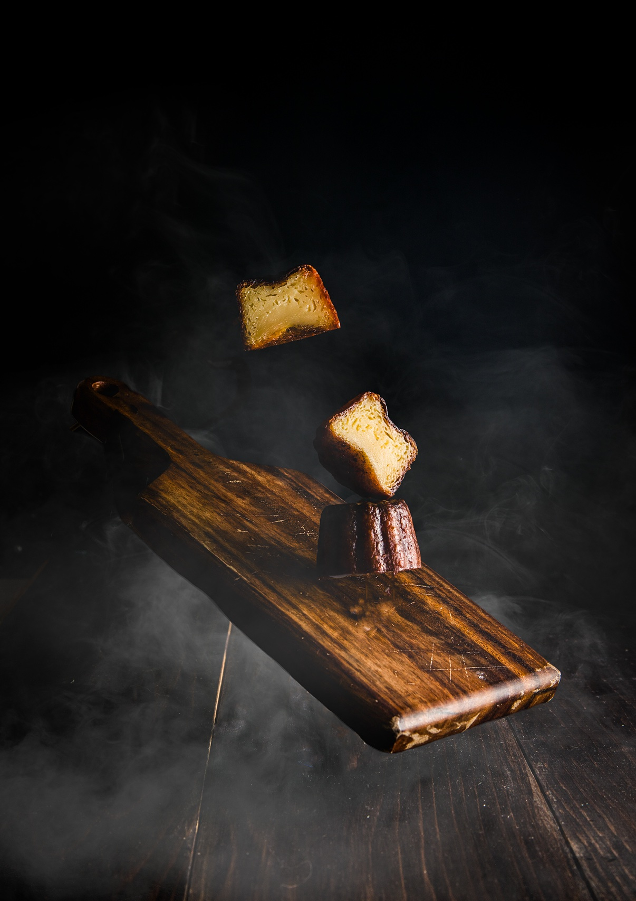
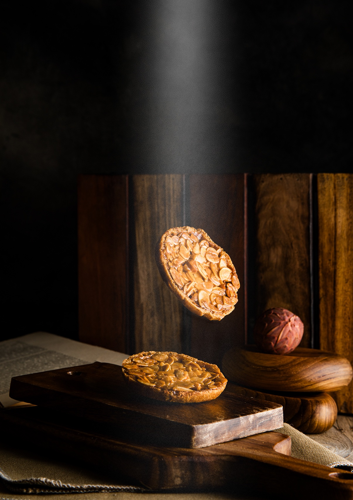
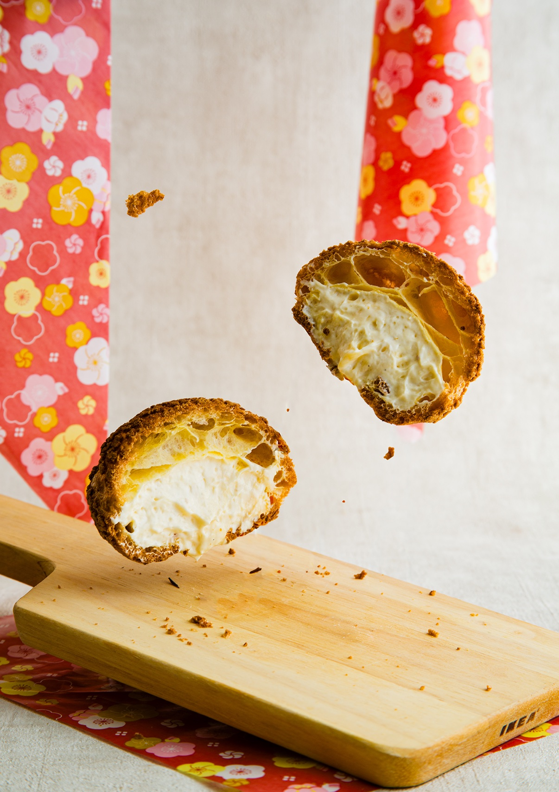
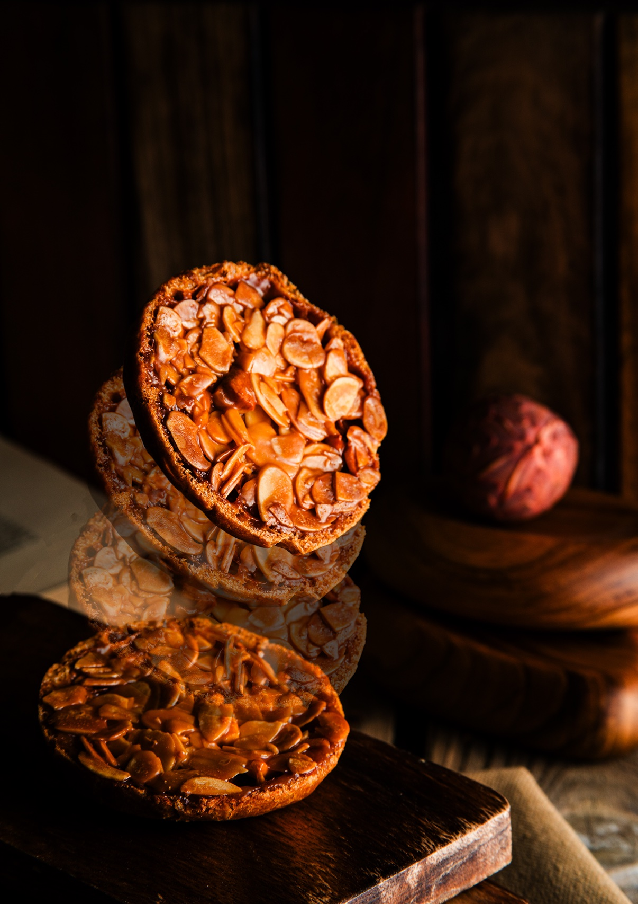

Collections — Chapter
Gravity Defied（重力からの解放）
浮かぶ食材、舞う粉、跳ねる水滴。重力から解放された一瞬を、合成と編集で仕上げる広告向けの表現です。







Contact
撮影のご相談は
公式LINEから
まずは公式LINEで、撮影したい商品とご希望の時期をお送りください
内容を確認して、こちらからご返信します
LINEをご利用でない方は、メールまたはお問い合わせフォームからご連絡ください